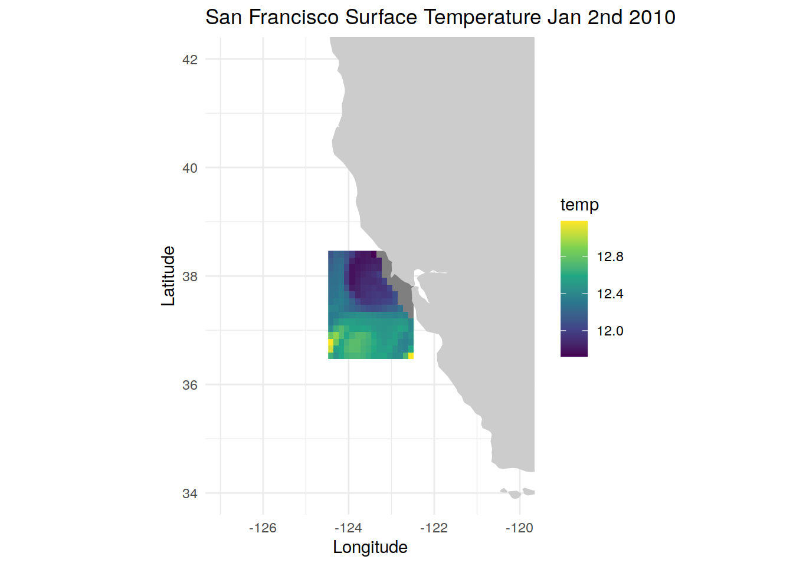
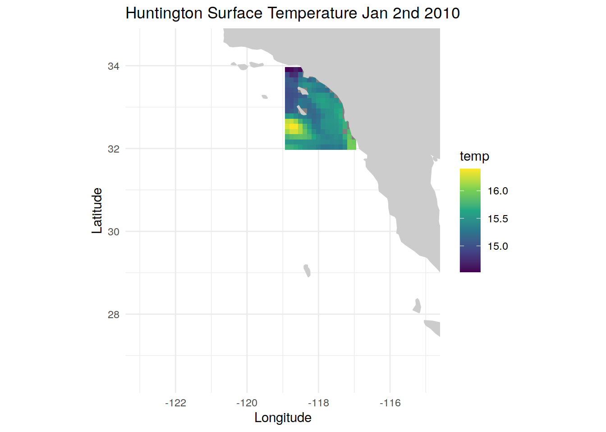
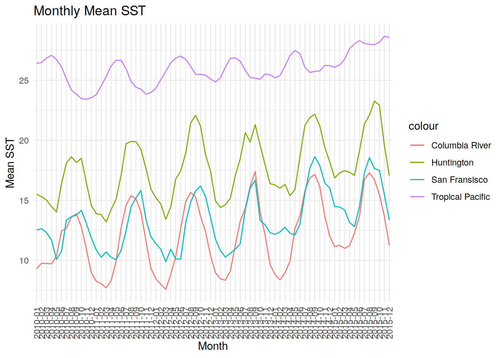
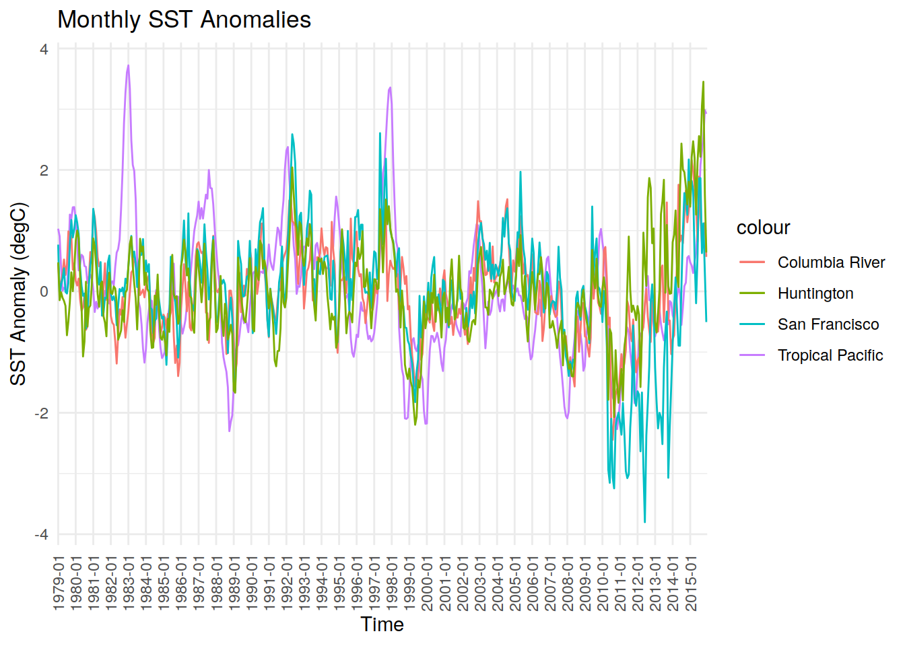

Temperature indices
Victoria Froh & Jens Daniel Müller
18 November, 2024
Last updated: 2024-11-18
Checks: 7 0
Knit directory: oae_ccs_roms/
This reproducible R Markdown analysis was created with workflowr (version 1.7.0). The Checks tab describes the reproducibility checks that were applied when the results were created. The Past versions tab lists the development history.
Great! Since the R Markdown file has been committed to the Git repository, you know the exact version of the code that produced these results.
Great job! The global environment was empty. Objects defined in the global environment can affect the analysis in your R Markdown file in unknown ways. For reproduciblity it’s best to always run the code in an empty environment.
The command set.seed(20240919) was run prior to running
the code in the R Markdown file. Setting a seed ensures that any results
that rely on randomness, e.g. subsampling or permutations, are
reproducible.
Great job! Recording the operating system, R version, and package versions is critical for reproducibility.
Nice! There were no cached chunks for this analysis, so you can be confident that you successfully produced the results during this run.
Great job! Using relative paths to the files within your workflowr project makes it easier to run your code on other machines.
Great! You are using Git for version control. Tracking code development and connecting the code version to the results is critical for reproducibility.
The results in this page were generated with repository version 853675f. See the Past versions tab to see a history of the changes made to the R Markdown and HTML files.
Note that you need to be careful to ensure that all relevant files for
the analysis have been committed to Git prior to generating the results
(you can use wflow_publish or
wflow_git_commit). workflowr only checks the R Markdown
file, but you know if there are other scripts or data files that it
depends on. Below is the status of the Git repository when the results
were generated:
Ignored files:
Ignored: .Rhistory
Ignored: .Rproj.user/
Untracked files:
Untracked: code/enso_indices.Rmd
Note that any generated files, e.g. HTML, png, CSS, etc., are not included in this status report because it is ok for generated content to have uncommitted changes.
These are the previous versions of the repository in which changes were
made to the R Markdown (analysis/temperature_indices.Rmd)
and HTML (docs/temperature_indices.html) files. If you’ve
configured a remote Git repository (see ?wflow_git_remote),
click on the hyperlinks in the table below to view the files as they
were in that past version.
| File | Version | Author | Date | Message |
|---|---|---|---|---|
| Rmd | 853675f | jens-daniel-mueller | 2024-11-18 | rebuild after code review |
| html | 66cd7d9 | jens-daniel-mueller | 2024-11-18 | Build site. |
| Rmd | 043c113 | jens-daniel-mueller | 2024-11-18 | rebuild after code review |
| html | 3aadd37 | jens-daniel-mueller | 2024-11-18 | Build site. |
| Rmd | c0c3eac | jens-daniel-mueller | 2024-11-18 | rebuild after code review |
| html | 02a42aa | jens-daniel-mueller | 2024-11-18 | Build site. |
| html | 3facddd | jens-daniel-mueller | 2024-11-18 | Build site. |
| html | 2509718 | jens-daniel-mueller | 2024-11-18 | Build site. |
| html | 2c9eb7e | vgfroh | 2024-11-15 | Build site. |
| html | fa48b39 | vgfroh | 2024-11-15 | Build site. |
| Rmd | 0437728 | vgfroh | 2024-11-15 | Adding full enso indices file |
| html | 36f52b0 | vgfroh | 2024-11-05 | Build site. |
| Rmd | 0b73066 | vgfroh | 2024-11-05 | Adding temperature indices |
Read this
this is the script to open the data
#loading packages
library(ncdf4)
library(stars)
library(tidyverse)
library(lubridate)
library(units)
#For Columbia location
#For the regridded standard files, path:
path_ROMSv2RG_results <-
"/net/sea/work/loher/ROMS/Alk_enh_formatted_2024_08/"
# #opening specific nc file to get overview
# view_nc <- nc_open(paste0(path_ROMSv2RG_results,
# "ColumbiaRiver/ColumbiaRiver_2010-2015_control.nc"))
#
# print(view_nc)
#filtering for just SST in 2x2deg box (45N-47N, 124W-126W), 2010 time series
colriv_temp <- read_ncdf(paste0(path_ROMSv2RG_results,
"ColumbiaRiver/ColumbiaRiver_2010-2015_control.nc"),
var = "temp",
ncsub = cbind(start = c(70, 40, 1, 1), count = c(16, 16, 1, 1096)
),
proxy = FALSE #need this on to override the proxy format
)
### ebbC project box
# ebbproj_temp <- read_ncdf(paste0(path_ROMSv2RG_results,
# "ColumbiaRiver/ColumbiaRiver_2010-2015_control.nc"),
# var = "temp",
# ncsub = cbind(start = c(79, 61, 1, 1), count = c(16, 16, 1, 1096)
# ),
# proxy = FALSE #need this on to override the proxy format
# )
###
#plotting the first time point to look at the selected region
colriv_jan2010_temp <- colriv_temp %>%
slice(time, 1)
ggplot() +
geom_stars(data = colriv_jan2010_temp, aes(fill = temp)) +
borders("world", colour = "gray80", fill = "gray80") +
labs(title = "Columbia River Surface Temperature Jan 2nd 2010",
x = "Longitude",
y = "Latitude") +
theme_minimal() +
scale_fill_viridis_c() +
coord_quickmap(xlim = c(-130,-122.5), ylim = c(41, 51))
#converts time dimension to regular, set in temp file
days_reg <- st_get_dimension_values(colriv_temp, "time") %>% ymd()
colriv_temp <- st_set_dimensions(colriv_temp, "time", values = days_reg)
#extract year-month
colriv_temp <- st_set_dimensions(colriv_temp, "time", values = format(
days_reg,"%Y-%m"))
#turning data into dataframe and cleaning up
colriv_temp <- colriv_temp %>%
drop_units() %>%
as.data.frame(long = TRUE) %>%
select(-depth)
#creating new data frame with grouped month and the mean SST for each
colriv_monthly_2010_2015 <- colriv_temp %>% group_by(time) %>%
summarise(ColumbiaRiver_MeanMonthlySST = mean(temp, na.rm = TRUE))
#since this data includes the first data point of 2016 and we don't need
colriv_monthly_2010_2015 <- colriv_monthly_2010_2015 %>% slice(-n())
####################
#For San Francisco location
#opening specific nc file to get overview
# view_nc <- nc_open(paste0(path_ROMSv2RG_results,
# "SanFrancisco/SanFrancisco_2010-2015_control.nc"))
#
# print(view_nc)
#filtering for just SST in 2x2deg box (36.5N-38.5N, 122.5W-124.5W), full 2010 time
sanfran_temp <- read_ncdf(paste0(path_ROMSv2RG_results,
"SanFrancisco/SanFrancisco_2010-2015_control.nc"),
var = "temp",
ncsub = cbind(start = c(33, 39, 1, 1), count = c(16, 16, 1, 1096)
),
proxy = FALSE #need this on to override the proxy format
)
#plotting specific time point to look at the selected region
sanfran_jan2010_temp <- sanfran_temp %>%
slice(time, 1)
ggplot() +
geom_stars(data = sanfran_jan2010_temp, aes(fill = temp)) +
borders("world", colour = "gray80", fill = "gray80") +
labs(title = "San Francisco Surface Temperature Jan 2nd 2010",
x = "Longitude",
y = "Latitude") +
theme_minimal() +
scale_fill_viridis_c() +
coord_quickmap(xlim = c(-127,-120), ylim = c(34, 42))
#converts time dimension to regular , rest in temp file
days_reg <- st_get_dimension_values(sanfran_temp, "time") %>% ymd()
sanfran_temp <- st_set_dimensions(sanfran_temp, "time", values = days_reg)
#extract year-month
sanfran_temp <- st_set_dimensions(sanfran_temp, "time", values = format(
days_reg,"%Y-%m"))
#turning data into dataframe and cleaning up
sanfran_temp <- sanfran_temp %>%
drop_units() %>%
as.data.frame(long = TRUE) %>%
select(-depth)
#creating new data frame with grouped month and the mean SST for each
sanfran_monthly_2010_2015 <- sanfran_temp %>% group_by(time) %>%
summarise(SanFrancisco_MeanMonthlySST = mean(temp, na.rm = TRUE))
#since this data includes the first data point of 2016 and we don't need
sanfran_monthly_2010_2015 <- sanfran_monthly_2010_2015 %>% slice(-n())
####################
#For Huntington location
#opening specific nc file to get overview
# view_nc <- nc_open(paste0(path_ROMSv2RG_results,
# "Huntington/Huntington_2010-2015_control.nc"))
#
# print(view_nc)
#filtering for just SST in 2x2deg box (32N-34N, 117W-119W), full 2010 time series
hunt_temp <- read_ncdf(paste0(path_ROMSv2RG_results,
"Huntington/Huntington_2010-2015_control.nc"),
var = "temp",
ncsub = cbind(start = c(50, 44, 1, 1), count = c(16, 16, 1, 1096)
),
proxy = FALSE #need this on to override the proxy format
)
#plotting the first time point to look at the selected region
hunt_jan2010_temp <- hunt_temp %>%
slice(time, 1)
ggplot() +
geom_stars(data = hunt_jan2010_temp, aes(fill = temp)) +
borders("world", colour = "gray80", fill = "gray80") +
labs(title = "Huntington Surface Temperature Jan 2nd 2010",
x = "Longitude",
y = "Latitude") +
theme_minimal() +
scale_fill_viridis_c() +
coord_quickmap(xlim = c(-123,-115), ylim = c(26.5, 34.5))
# #All 3 regions
# ggplot() +
# geom_stars(data = hunt_jan2010_temp, aes(fill = temp)) +
# geom_stars(data = sanfran_jan2010_temp, aes(fill = temp)) +
# geom_stars(data = colriv_jan2010_temp, aes(fill = temp)) +
# borders("world", colour = "gray80", fill = "gray80") +
# labs(title = "CCS Surface Temperature Jan 2nd 2010",
# x = "Longitude",
# y = "Latitude") +
# theme_minimal() +
# scale_fill_viridis_c() +
# coord_quickmap(xlim = c(-130,-115), ylim = c(26.5, 49.5))
#converts time dimension to regular , rest in temp file
days_reg <- st_get_dimension_values(hunt_temp, "time") %>% ymd()
hunt_temp <- st_set_dimensions(hunt_temp, "time", values = days_reg)
#extract year-month
hunt_temp <- st_set_dimensions(hunt_temp, "time", values = format(
days_reg,"%Y-%m"))
#turning data into dataframe and cleaning up
hunt_temp <- hunt_temp %>%
drop_units() %>% #see if i need this
as.data.frame(long = TRUE) %>%
select(-depth)
#creating new data frame with grouped month and the mean SST for each
hunt_monthly_2010_2015 <- hunt_temp %>% group_by(time) %>%
summarise(Huntington_MeanMonthlySST = mean(temp, na.rm = TRUE))
#since this data includes the first data point of 2016 and we don't need
hunt_monthly_2010_2015 <- hunt_monthly_2010_2015 %>% slice(-n())
#####################
#For tropical 3.4 region: 5S->5N, 120W->170W
#reading in all 6 years of monthly data and combining into 1 stars object
years <- 2010:2015
tropP_temp <- do.call(c, lapply(years, function(year) (
read_ncdf(paste0(path_ROMSv2RG_results,
"regrid_2024_10/surface_temp_tropPacific/Control_", year,
"_monthly_tropPacific.nc"),
var = "temp",
proxy = FALSE #need this on to override the proxy format
))))
#plotting the first time point to look at the selected region
tropP_jan2010_temp <- tropP_temp %>%
slice(time, 1)
ggplot() +
geom_stars(data = tropP_jan2010_temp, aes(fill = temp)) +
borders("world", colour = "gray80", fill = "gray80") +
labs(title = "Tropical Pacific 3.4 Surface Temperature Jan 2nd 2010",
x = "Longitude",
y = "Latitude") +
theme_minimal() +
scale_fill_viridis_c() +
coord_quickmap(xlim = c(-175,-115), ylim = c(-10.5, 10.5))
#converts time dimension to regular , rest in temp file
days_reg <- st_get_dimension_values(tropP_temp, "time")
tropP_temp <- st_set_dimensions(tropP_temp, "time", values = days_reg)
#extract year-month
tropP_temp <- st_set_dimensions(tropP_temp, "time", values = format(
ymd_hms(days_reg),"%Y-%m"))
#turning data into dataframe and cleaning up
tropP_temp <- tropP_temp %>%
drop_units() %>%
as.data.frame(long = TRUE) %>%
select(-s_rho)
#creating new data frame with grouped month and the mean SST for each
tropP_monthly_2010_2015 <- tropP_temp %>% group_by(time) %>%
summarise(tropPacific_MeanMonthlySST = mean(temp, na.rm = TRUE))
#####################
#plotting all 4 time series of annual mean SST for 2010-2015
ggplot(data = tropP_monthly_2010_2015,
aes(x = time, y = tropPacific_MeanMonthlySST, group = 1)) +
geom_line(aes(color = "Tropical Pacific")) +
geom_line(data = colriv_monthly_2010_2015,
aes(y = ColumbiaRiver_MeanMonthlySST, color = "Columbia River")) +
geom_line(data = sanfran_monthly_2010_2015,
aes(y = SanFrancisco_MeanMonthlySST, color = "San Fransisco")) +
geom_line(data = hunt_monthly_2010_2015, aes(y = Huntington_MeanMonthlySST,
color = "Huntington")) +
labs(title = "Monthly Mean SST", x = "Month", y = "Mean SST") +
theme_minimal() +
theme(axis.text.x = element_text(angle = 90, vjust = 0.5, hjust = 1))
####################
#30 year time series of historical monthly averages for all 4 locations
years_past <- 1979:2009
locations <- c("ColumbiaRiver", "Huntington", "SanFrancisco", "tropPacific")
annual_cycles <- list()
annual_monthly_SST_list <- list()
for (i in locations){
#reading in all 30 years of data for each location into a stars object
annual_cycles[[i]] <- do.call(c, lapply(years_past, function(year)(
read_ncdf(paste0(path_ROMSv2RG_results,
"regrid_2024_10/1979-2009/pactcs30_", year,
"_avg_", i, ".nc"),
var = "temp",
proxy = FALSE
))))
#converting time dimensions, extracting year-month
days_list <- st_get_dimension_values(annual_cycles[[i]], "time")
annual_cycles[[i]] <- st_set_dimensions(annual_cycles[[i]],
"time", values = days_list)
annual_cycles[[i]] <- st_set_dimensions(annual_cycles[[i]], "time",
values = format(ymd_hms(days_list),"%Y-%m"))
#converting each stars object into a dataframe and cleaning up
annual_cycles[[i]] <- annual_cycles[[i]] %>%
drop_units() %>%
as.data.frame(long = TRUE) %>%
select(-s_rho)
#creating a new data frame with the monthly averages over each region
annual_monthly_SST_list[[i]] <- annual_cycles[[i]] %>%
group_by(time) %>%
summarise(mean_value = mean(temp, na.rm = TRUE), .groups = 'drop') %>%
rename(!!paste0(i, "_MeanMonthlySST") := mean_value)
}
#combining 30-year data into a single data frame + the 2010-2015 data
annual_monthly_sst <- reduce(annual_monthly_SST_list, left_join, by = "time")
full_2010_2015 <- list(colriv_monthly_2010_2015, hunt_monthly_2010_2015,
sanfran_monthly_2010_2015,tropP_monthly_2010_2015) %>%
reduce(full_join, by = "time")
annual_monthly_sst_full <- bind_rows(annual_monthly_sst, full_2010_2015)
#computing the mean over the full period for each month at each location
monthly_mean_baseline <- annual_monthly_sst_full %>%
mutate(month = format(as.Date(paste0(time, "-01")), "%m")) %>%
group_by(month) %>%
summarise(ColumbiaRiver_basemonthlySST = mean(ColumbiaRiver_MeanMonthlySST,
na.rm = TRUE),
Huntington_basemonthlySST = mean(Huntington_MeanMonthlySST, na.rm = TRUE),
SanFrancisco_basemonthlySST = mean(SanFrancisco_MeanMonthlySST, na.rm = TRUE),
tropPacific_basemonthlySST = mean(tropPacific_MeanMonthlySST, na.rm = TRUE),
.groups = 'drop')
####################
#Calculating anomaly index values
#Extracting the month from the full time period and adding a column for it
annual_monthly_sst_full$month <- substr(annual_monthly_sst_full$time, 6, 7)
anomaly_SST_data <- merge(annual_monthly_sst_full, monthly_mean_baseline,
by = "month")
#calculate the anomaly for each location/month (time series - base month mean)
for (j in locations) {
anomaly_col <- paste0(j, "_SST_anomaly")
anomaly_SST_data <- anomaly_SST_data %>%
mutate(!!anomaly_col := .data[[paste0(j, "_MeanMonthlySST")]] -
.data[[paste0(j, "_basemonthlySST")]])
}
#reduce unneeded columns and sort chronologically
anomaly_SST <- anomaly_SST_data %>%
select(time, ColumbiaRiver_SST_anomaly, Huntington_SST_anomaly,
SanFrancisco_SST_anomaly, tropPacific_SST_anomaly) %>%
arrange(time)
#plot temperature anomalies
ggplot(data = anomaly_SST, aes(x = time, group = 1)) +
geom_line(aes(y = tropPacific_SST_anomaly, color = "Tropical Pacific")) +
geom_line(aes(y = ColumbiaRiver_SST_anomaly, color = "Columbia River")) +
geom_line(aes(y = SanFrancisco_SST_anomaly, color = "San Francisco")) +
geom_line(aes(y = Huntington_SST_anomaly, color = "Huntington")) +
scale_x_discrete(breaks = anomaly_SST$time[seq(1, nrow(anomaly_SST), by = 12)]) +
labs(title = "Monthly SST Anomalies", x = "Time", y = "SST Anomaly (degC)") +
theme_minimal() +
theme(axis.text.x = element_text(angle = 90, vjust = 0.5, hjust = 1))
#####################
#Computing running annual mean (mean temp for one year starting that month)
running_annual_mean_sst <- annual_monthly_sst_full
for (k in locations) {
temp_col <- paste0(k, "_MeanMonthlySST")
run_ann_mean_col <- paste0(k, "_SST_run_ann_mean")
running_annual_mean_sst[[run_ann_mean_col]] <- NA #creates empty new column
for (m in 1:(nrow(annual_monthly_sst_full) - 11)) { #will not calculate for 2015
range <- annual_monthly_sst_full[[temp_col]][m:(m+11)]
#calculating and storing the running annual mean
running_annual_mean_sst[[run_ann_mean_col]][m] <- mean(range, na.rm = TRUE)
}
}
#plotting sstram
ggplot(data = running_annual_mean_sst, aes(x = time, group = 1)) +
geom_line(aes(y = tropPacific_SST_run_ann_mean, color = "Tropical Pacific")) +
geom_line(aes(y = ColumbiaRiver_SST_run_ann_mean, color = "Columbia River")) +
geom_line(aes(y = SanFrancisco_SST_run_ann_mean, color = "San Francisco")) +
geom_line(aes(y = Huntington_SST_run_ann_mean, color = "Huntington")) +
scale_x_discrete(breaks = running_annual_mean_sst$time[
seq(1, nrow(running_annual_mean_sst), by = 12)]) +
labs(title = "Monthly SST Running Annual Mean", x = "Time",
y = "Running Annual Mean (degC)") +
theme_minimal() +
theme(axis.text.x = element_text(angle = 90, vjust = 0.5, hjust = 1))Warning: Removed 11 rows containing missing values (`geom_line()`).
Removed 11 rows containing missing values (`geom_line()`).
Removed 11 rows containing missing values (`geom_line()`).
Removed 11 rows containing missing values (`geom_line()`).
#Computing running annual mean for the sst anomaly
anomaly_sst_ram <- anomaly_SST
for (n in locations) {
anom_col <- paste0(n, "_SST_anomaly")
anom_ram_col <- paste0(n, "_sst_anom_ram")
anomaly_sst_ram[[anom_ram_col]] <- NA #creates empty new column
for (p in 1:(nrow(anomaly_SST) - 11)) { #will not calculate for 2015
range <- anomaly_SST[[anom_col]][p:(p+11)]
#calculating and storing the running annual mean
anomaly_sst_ram[[anom_ram_col]][p] <- mean(range, na.rm = TRUE)
}
}
#plotting
ggplot(data = anomaly_sst_ram, aes(x = time, group = 1)) +
geom_line(aes(y = tropPacific_sst_anom_ram, color = "Tropical Pacific")) +
geom_line(aes(y = ColumbiaRiver_sst_anom_ram, color = "Columbia River")) +
geom_line(aes(y = SanFrancisco_sst_anom_ram, color = "San Francisco")) +
geom_line(aes(y = Huntington_sst_anom_ram, color = "Huntington")) +
scale_x_discrete(breaks = anomaly_sst_ram$time[
seq(1, nrow(anomaly_sst_ram), by = 12)]) +
labs(title = "SST Anomaly Running Annual Mean", x = "Time",
y = "SST Anomaly (degC)") +
theme_minimal() +
theme(axis.text.x = element_text(angle = 90, vjust = 0.5, hjust = 1))Warning: Removed 11 rows containing missing values (`geom_line()`).
Removed 11 rows containing missing values (`geom_line()`).
Removed 11 rows containing missing values (`geom_line()`).
Removed 11 rows containing missing values (`geom_line()`).
# #Plotting subset: 2006 - 2015
# anomaly_sst_ram <- anomaly_sst_ram %>%
# mutate(time = as.character(time))
# subset_anomalySST_ram <- anomaly_sst_ram %>%
# filter(time >= "2010-01")
# ggplot(data = subset_anomalySST_ram, aes(x = time, group = 1)) +
# geom_line(aes(y = tropPacific_sst_anom_ram, color = "Tropical Pacific")) +
# geom_line(aes(y = ColumbiaRiver_sst_anom_ram, color = "Columbia River")) +
# geom_line(aes(y = SanFrancisco_sst_anom_ram, color = "San Francisco")) +
# geom_line(aes(y = Huntington_sst_anom_ram, color = "Huntington")) +
# scale_x_discrete(breaks = subset_anomalySST_ram$time[seq(1, nrow(subset_anomalySST_ram), by = 3)]) +
# labs(title = "Monthly SST Anomaly RAM (2010 - 2014)", x = "Time", y = "SST Anomaly RAM (degC)") +
# theme_minimal() +
# theme(axis.text.x = element_text(angle = 90, vjust = 0.5, hjust = 1))
# #All 3 regions colors
# ggplot() +
# geom_stars(data = tropP_jan2010_temp, aes(fill = "#C77CFF")) +
# geom_stars(data = colriv_jan2010_temp, aes(fill = "#F8766D")) +
# geom_stars(data = sanfran_jan2010_temp, aes(fill = "#00BFC4")) +
# geom_stars(data = hunt_jan2010_temp, aes(fill = "#7CAE00")) +
# borders("world", colour = "gray80", fill = "gray80") +
# labs(title = "CCS Test Regions",
# x = "Longitude",
# y = "Latitude") +
# theme_minimal() +
# scale_fill_identity(guide = "legend",
# labels = c("Tropical Pacific", "Columbia River", "San Francisco", "Huntington"),
# breaks = c("#C77CFF", "#F8766D", "#00BFC4", "#7CAE00")) +
# coord_quickmap(xlim = c(-170,-115), ylim = c(-10, 49.5))
######################
#Calculating correlation coefficients, pearson correlation test
cor.test(anomaly_SST$tropPacific_SST_anomaly, anomaly_SST$ColumbiaRiver_SST_anomaly)
Pearson's product-moment correlation
data: anomaly_SST$tropPacific_SST_anomaly and anomaly_SST$ColumbiaRiver_SST_anomaly
t = 10.15, df = 442, p-value < 2.2e-16
alternative hypothesis: true correlation is not equal to 0
95 percent confidence interval:
0.3561311 0.5073177
sample estimates:
cor
0.434783 cor.test(anomaly_SST$tropPacific_SST_anomaly, anomaly_SST$SanFrancisco_SST_anomaly)
Pearson's product-moment correlation
data: anomaly_SST$tropPacific_SST_anomaly and anomaly_SST$SanFrancisco_SST_anomaly
t = 10.538, df = 442, p-value < 2.2e-16
alternative hypothesis: true correlation is not equal to 0
95 percent confidence interval:
0.3704769 0.5194885
sample estimates:
cor
0.4480896 cor.test(anomaly_SST$tropPacific_SST_anomaly, anomaly_SST$Huntington_SST_anomaly)
Pearson's product-moment correlation
data: anomaly_SST$tropPacific_SST_anomaly and anomaly_SST$Huntington_SST_anomaly
t = 10.131, df = 442, p-value < 2.2e-16
alternative hypothesis: true correlation is not equal to 0
95 percent confidence interval:
0.3554160 0.5067094
sample estimates:
cor
0.4341188 cor.test(anomaly_sst_ram$tropPacific_sst_anom_ram,
anomaly_sst_ram$ColumbiaRiver_sst_anom_ram)
Pearson's product-moment correlation
data: anomaly_sst_ram$tropPacific_sst_anom_ram and anomaly_sst_ram$ColumbiaRiver_sst_anom_ram
t = 15.188, df = 431, p-value < 2.2e-16
alternative hypothesis: true correlation is not equal to 0
95 percent confidence interval:
0.5254327 0.6485840
sample estimates:
cor
0.5904345 cor.test(anomaly_sst_ram$tropPacific_sst_anom_ram,
anomaly_sst_ram$SanFrancisco_sst_anom_ram)
Pearson's product-moment correlation
data: anomaly_sst_ram$tropPacific_sst_anom_ram and anomaly_sst_ram$SanFrancisco_sst_anom_ram
t = 15.877, df = 431, p-value < 2.2e-16
alternative hypothesis: true correlation is not equal to 0
95 percent confidence interval:
0.5444195 0.6637299
sample estimates:
cor
0.6074898 cor.test(anomaly_sst_ram$tropPacific_sst_anom_ram,
anomaly_sst_ram$Huntington_sst_anom_ram)
Pearson's product-moment correlation
data: anomaly_sst_ram$tropPacific_sst_anom_ram and anomaly_sst_ram$Huntington_sst_anom_ram
t = 12.883, df = 431, p-value < 2.2e-16
alternative hypothesis: true correlation is not equal to 0
95 percent confidence interval:
0.4556806 0.5920925
sample estimates:
cor
0.5272757 #loading packages
library(ncdf4)
library(stars)
library(tidyverse)
library(lubridate)
library(units)
#For Columbia location
#For the regridded standard files, path:
path_ROMSv2RG_results <-
"/net/sea/work/loher/ROMS/Alk_enh_formatted_2024_08/"
#filtering for just SST in 2x2deg box (45N-47N, 124W-126W), 2010 time series
colriv_temp <- read_ncdf(
paste0(
path_ROMSv2RG_results,
"ColumbiaRiver/ColumbiaRiver_2010-2015_control.nc"
),
var = "temp",
ncsub = cbind(start = c(70, 40, 1, 1), count = c(16, 16, 1, 1096)),
proxy = FALSE #need this on to override the proxy format
)
#turning data into dataframe and cleaning up
colriv_temp <- colriv_temp %>%
drop_units() %>%
as_tibble() %>%
select(-depth)
#filtering for just SST in 2x2deg box (36.5N-38.5N, 122.5W-124.5W), full 2010 time
sanfran_temp <- read_ncdf(
paste0(
path_ROMSv2RG_results,
"SanFrancisco/SanFrancisco_2010-2015_control.nc"
),
var = "temp",
ncsub = cbind(start = c(33, 39, 1, 1), count = c(16, 16, 1, 1096)),
proxy = FALSE #need this on to override the proxy format
)
#turning data into dataframe and cleaning up
sanfran_temp <- sanfran_temp %>%
drop_units() %>%
as_tibble() %>%
select(-depth)
#filtering for just SST in 2x2deg box (32N-34N, 117W-119W), full 2010 time series
hunt_temp <- read_ncdf(
paste0(
path_ROMSv2RG_results,
"Huntington/Huntington_2010-2015_control.nc"
),
var = "temp",
ncsub = cbind(start = c(50, 44, 1, 1), count = c(16, 16, 1, 1096)),
proxy = FALSE #need this on to override the proxy format
)
#turning data into dataframe and cleaning up
hunt_temp <- hunt_temp %>%
drop_units() %>%
as_tibble() %>%
select(-depth)
# join regional data frames
region_temp <-
bind_rows(
colriv_temp %>% mutate(region = "ColumbiaRiver"),
sanfran_temp %>% mutate(region = "SanFrancisco"),
hunt_temp %>% mutate(region = "Huntington")
)
#plotting the first time point to look at the selected region
region_temp %>%
filter(time == min(time)) %>%
ggplot() +
geom_raster(aes(lon,
lat,
fill = temp)) +
# borders("world", colour = "gray80", fill = "gray80") +
labs(title = "Columbia River Surface Temperature Jan 2nd 2010",
x = "Longitude",
y = "Latitude") +
theme_bw() +
facet_wrap(~ region) +
scale_fill_viridis_c() +
coord_quickmap(xlim = c(-128,-116), ylim = c(30, 48), expand = FALSE)Warning: Raster pixels are placed at uneven horizontal intervals and will be shifted
ℹ Consider using `geom_tile()` instead.
Raster pixels are placed at uneven horizontal intervals and will be shifted
ℹ Consider using `geom_tile()` instead.
| Version | Author | Date |
|---|---|---|
| 66cd7d9 | jens-daniel-mueller | 2024-11-18 |
#creating new data frame with grouped month and the mean SST for each
region_temp_monthly_mean <- region_temp %>%
mutate(yr_mon = paste0(format(time, "%Y-%m"),"-15"),
yr_mon = ymd(yr_mon)) %>%
group_by(yr_mon, region) %>%
summarise(SST_mean = mean(temp, na.rm = TRUE)) %>%
ungroup()
#since this data includes the first data point of 2016 and we don't need
region_temp_monthly_mean <- region_temp_monthly_mean %>% slice(-n())
#####################
#For tropical 3.4 region: 5S->5N, 120W->170W
#reading in all 6 years of monthly data and combining into 1 stars object
years <- 2010:2015
tropP_temp <- do.call(c, lapply(years, function(year) (
read_ncdf(paste0(path_ROMSv2RG_results,
"regrid_2024_10/surface_temp_tropPacific/Control_", year,
"_monthly_tropPacific.nc"),
var = "temp",
proxy = FALSE #need this on to override the proxy format
))))
#plotting the first time point to look at the selected region
tropP_jan2010_temp <- tropP_temp %>%
slice(time, 1)
ggplot() +
geom_stars(data = tropP_jan2010_temp, aes(fill = temp)) +
borders("world", colour = "gray80", fill = "gray80") +
labs(title = "Tropical Pacific 3.4 Surface Temperature Jan 2nd 2010",
x = "Longitude",
y = "Latitude") +
theme_bw() +
scale_fill_viridis_c() +
coord_quickmap(xlim = c(-175,-115), ylim = c(-10.5, 10.5), expand = 0)
| Version | Author | Date |
|---|---|---|
| 66cd7d9 | jens-daniel-mueller | 2024-11-18 |
#turning data into dataframe and cleaning up
tropP_temp <- tropP_temp %>%
drop_units() %>%
as_tibble() %>%
select(-s_rho)
#creating new data frame with grouped month and the mean SST for each
tropP_monthly_2010_2015 <- tropP_temp %>%
mutate(yr_mon = paste0(format(time, "%Y-%m"), "-15"), yr_mon = ymd(yr_mon)) %>%
group_by(yr_mon) %>%
summarise(SST_mean = mean(temp, na.rm = TRUE)) %>%
ungroup()
region_temp_monthly_mean <-
bind_rows(region_temp_monthly_mean,
tropP_monthly_2010_2015 %>% mutate(region = "tropPacific"))
#####################
#plotting all 4 time series of annual mean SST for 2010-2015
region_temp_monthly_mean %>%
ggplot(aes(x = yr_mon, y = SST_mean, color = region)) +
geom_path() +
labs(y = "Monthly Mean SST (°C)") +
scale_color_brewer(palette = "Dark2") +
theme_bw() +
theme(axis.title.x = element_blank(),
legend.title = element_blank())
| Version | Author | Date |
|---|---|---|
| 66cd7d9 | jens-daniel-mueller | 2024-11-18 |
####################
#30 year time series of historical monthly averages for all 4 locations
years_past <- 1979:2009
locations <- c("ColumbiaRiver", "Huntington", "SanFrancisco", "tropPacific")
annual_cycles <- list()
annual_monthly_SST_list <- list()
for (i in locations){
# i <- locations[1]
#reading in all 30 years of data for each location into a stars object
annual_cycles[[i]] <- do.call(c, lapply(years_past, function(year)(
read_ncdf(paste0(path_ROMSv2RG_results,
"regrid_2024_10/1979-2009/pactcs30_", year,
"_avg_", i, ".nc"),
var = "temp",
proxy = FALSE
))))
#converting each stars object into a dataframe and cleaning up
annual_cycles[[i]] <- annual_cycles[[i]] %>%
drop_units() %>%
as_tibble() %>%
select(-s_rho)
#creating a new data frame with the monthly averages over each region
annual_monthly_SST_list[[i]] <- annual_cycles[[i]] %>%
mutate(yr_mon = paste0(format(time, "%Y-%m"), "-15"), yr_mon = ymd(yr_mon)) %>%
group_by(yr_mon) %>%
summarise(SST_mean = mean(temp, na.rm = TRUE)) %>%
ungroup() %>%
mutate(region = i)
}
#combining 30-year data into a single data frame + the 2010-2015 data
annual_monthly_sst <- reduce(annual_monthly_SST_list, bind_rows)
annual_monthly_sst_full <- bind_rows(annual_monthly_sst, region_temp_monthly_mean)
#computing the mean over the full period for each month at each location
monthly_mean_baseline <- annual_monthly_sst_full %>%
mutate(month = format(as.Date(yr_mon), "%m")) %>%
group_by(month, region) %>%
summarise(SST_clim = mean(SST_mean)) %>%
ungroup()
monthly_mean_baseline %>%
mutate(month = as.numeric(month)) %>%
ggplot(aes(month, SST_clim, col = region)) +
geom_path() +
labs(y = "Climatological Monthly Mean SST (°C)") +
scale_color_brewer(palette = "Dark2") +
theme_bw() +
scale_x_continuous(breaks = seq(1,12,3)) +
theme(legend.title = element_blank())
| Version | Author | Date |
|---|---|---|
| 66cd7d9 | jens-daniel-mueller | 2024-11-18 |
####################
#Calculating anomaly index values
annual_monthly_sst_full <- annual_monthly_sst_full %>%
mutate(month = format(as.Date(yr_mon), "%m")) %>%
group_by(month, region) %>%
mutate(SST_clim = mean(SST_mean)) %>%
ungroup() %>%
mutate(SST_anom = SST_mean - SST_clim)
annual_monthly_sst_full %>%
ggplot(aes(x = yr_mon, y = SST_anom, color = region)) +
geom_path() +
labs(y = "Monthly Mean SST anomaly (°C)") +
scale_color_brewer(palette = "Dark2") +
theme_bw() +
theme(axis.title.x = element_blank(),
legend.title = element_blank())
| Version | Author | Date |
|---|---|---|
| 66cd7d9 | jens-daniel-mueller | 2024-11-18 |
#####################
#Computing running annual mean (mean temp for one year starting that month)
library(zoo)
running_annual_mean_sst <- annual_monthly_sst_full %>%
select(yr_mon, region, SST_mean, SST_anom) %>%
pivot_longer(starts_with("SST")) %>%
group_by(region, name) %>%
mutate(value = rollmean(value, k=12, fill=NA)) %>%
ungroup()
running_annual_mean_sst %>%
ggplot(aes(x = yr_mon, y = value, color = region)) +
geom_path() +
labs(y = "Annual Running Mean (°C)") +
scale_color_brewer(palette = "Dark2") +
facet_grid(name ~ ., scales = "free_y") +
theme_bw() +
theme(axis.title.x = element_blank(),
legend.title = element_blank())Warning: Removed 88 rows containing missing values (`geom_path()`).
| Version | Author | Date |
|---|---|---|
| 66cd7d9 | jens-daniel-mueller | 2024-11-18 |
######################
#Calculating correlation coefficients, pearson correlation test
annual_monthly_sst_full %>%
select(yr_mon, region, SST_anom) %>%
pivot_wider(names_from = region,
values_from = SST_anom) %>%
pivot_longer(-c(yr_mon, tropPacific)) %>%
drop_na() %>%
group_by(name) %>%
summarise(cor = cor(tropPacific, value)) %>%
ungroup() %>%
ggplot(aes(name, cor)) +
geom_col()
| Version | Author | Date |
|---|---|---|
| 66cd7d9 | jens-daniel-mueller | 2024-11-18 |
sessionInfo()R version 4.2.2 (2022-10-31)
Platform: x86_64-pc-linux-gnu (64-bit)
Running under: openSUSE Leap 15.5
Matrix products: default
BLAS: /usr/local/R-4.2.2/lib64/R/lib/libRblas.so
LAPACK: /usr/local/R-4.2.2/lib64/R/lib/libRlapack.so
locale:
[1] LC_CTYPE=en_US.UTF-8 LC_NUMERIC=C
[3] LC_TIME=en_US.UTF-8 LC_COLLATE=en_US.UTF-8
[5] LC_MONETARY=en_US.UTF-8 LC_MESSAGES=en_US.UTF-8
[7] LC_PAPER=en_US.UTF-8 LC_NAME=C
[9] LC_ADDRESS=C LC_TELEPHONE=C
[11] LC_MEASUREMENT=en_US.UTF-8 LC_IDENTIFICATION=C
attached base packages:
[1] stats graphics grDevices utils datasets methods base
other attached packages:
[1] zoo_1.8-11 units_0.8-0 lubridate_1.9.0 timechange_0.1.1
[5] forcats_0.5.2 stringr_1.5.0 dplyr_1.1.3 purrr_1.0.2
[9] readr_2.1.3 tidyr_1.3.0 tibble_3.2.1 ggplot2_3.4.4
[13] tidyverse_1.3.2 stars_0.6-0 sf_1.0-9 abind_1.4-5
[17] ncdf4_1.19 workflowr_1.7.0
loaded via a namespace (and not attached):
[1] fs_1.5.2 RColorBrewer_1.1-3 httr_1.4.4
[4] rprojroot_2.0.3 tools_4.2.2 backports_1.4.1
[7] bslib_0.4.1 utf8_1.2.2 R6_2.5.1
[10] KernSmooth_2.23-20 DBI_1.1.3 colorspace_2.0-3
[13] withr_2.5.0 tidyselect_1.2.0 processx_3.8.0
[16] compiler_4.2.2 git2r_0.30.1 cli_3.6.1
[19] rvest_1.0.3 RNetCDF_2.6-1 xml2_1.3.3
[22] labeling_0.4.2 sass_0.4.4 scales_1.2.1
[25] classInt_0.4-8 callr_3.7.3 proxy_0.4-27
[28] digest_0.6.30 rmarkdown_2.18 pkgconfig_2.0.3
[31] htmltools_0.5.3 highr_0.9 dbplyr_2.2.1
[34] fastmap_1.1.0 maps_3.4.1 rlang_1.1.1
[37] readxl_1.4.1 rstudioapi_0.15.0 PCICt_0.5-4.3
[40] jquerylib_0.1.4 generics_0.1.3 farver_2.1.1
[43] jsonlite_1.8.3 googlesheets4_1.0.1 magrittr_2.0.3
[46] ncmeta_0.3.5 Rcpp_1.0.11 munsell_0.5.0
[49] fansi_1.0.3 lifecycle_1.0.3 stringi_1.7.8
[52] whisker_0.4 yaml_2.3.6 grid_4.2.2
[55] parallel_4.2.2 promises_1.2.0.1 crayon_1.5.2
[58] lattice_0.20-45 haven_2.5.1 hms_1.1.2
[61] knitr_1.41 ps_1.7.2 pillar_1.9.0
[64] reprex_2.0.2 glue_1.6.2 evaluate_0.18
[67] getPass_0.2-2 modelr_0.1.10 vctrs_0.6.4
[70] tzdb_0.3.0 httpuv_1.6.6 cellranger_1.1.0
[73] gtable_0.3.1 assertthat_0.2.1 cachem_1.0.6
[76] xfun_0.35 lwgeom_0.2-10 broom_1.0.5
[79] e1071_1.7-12 later_1.3.0 class_7.3-20
[82] googledrive_2.0.0 viridisLite_0.4.1 gargle_1.2.1
[85] ellipsis_0.3.2